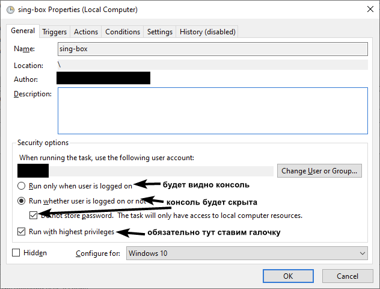
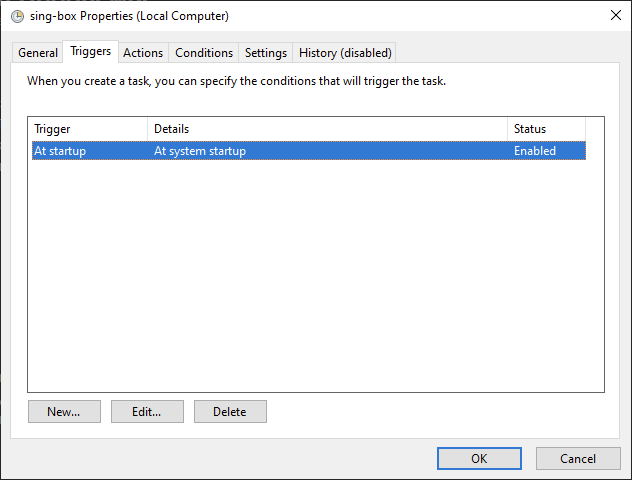
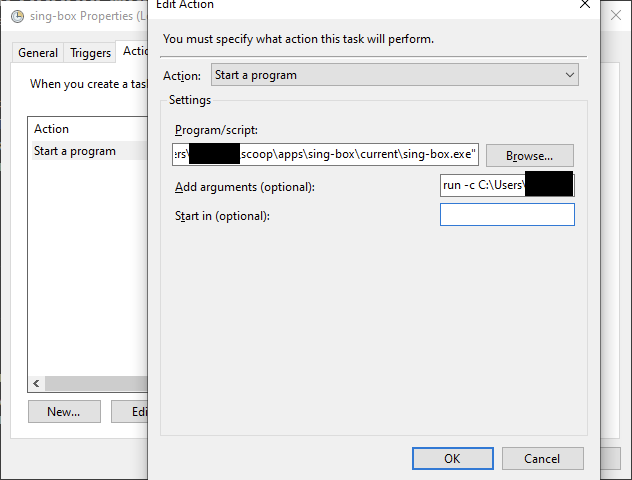
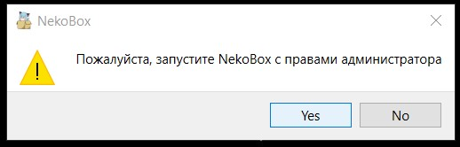

Хочу поинтересоваться, удалось ли кому-то нормально настроить автозапуск при старте системы?
Через раз слетает то TUN, то галочка с прокси. А родная опция авторана в принципе не работает, нужно добавлять службу. Это неровности софта, или можно как-то наладить этот момент, чтобы при запуске винды сразу включался TUN вместе с прокси и вообще не вспоминать про него?
Насколько я помню, tun режим в windows клиенте nekoray требует запуска с админскими правами, а классический автозапуск с админскими правами невозможен в принципе. Вроде раньше это обходилось через планировщик задач windows, можно сделать задачу запускать приложение с админскими правами.
Пробуйте:
С правами всё норм, TUN включается, но не всегда. Проблема именно в хаотичных отлётах либо туна либо прокси
Можно попробовать клиент без гуя, вроде того же сингбокса, где весь конфиг в текстовом файле. Там галка точно не “слетит”. 
Ну или пробовать альтернативный гуи клиент v2rayn
Учитывая то, что каких-либо навыков работы с данными конфигами 0, перспектива сделать всё то же, что даёт некорэй (TUN по белому списку процессов и полный байпасс по всему остальному) выглядит крайне туманно. Вопрос больше исходит от того, что может есть какие-то моменты в самом клиенте, которые фиксанут это, потому что я находил пару тем, где ребята просили помочь с автораном (просто чтобы приложение запускалось).
Тоже с этим мучался, оно непонятно как работает, решал проблему отключая и включая галочки “Запомнить последний профиль” и “Запускать вместе с системой” потом закрывал NekoRay, перезапускал компьютер и в определенный момент оно начинало работать.
прям на постоянке теперь работает? я прост пару раз грузанул норм, потом отпала галка. И помню были посты, где типы настраивали ещё первоначально TUN режим, и часто упоминали, что он бывает багается.
Да, на постоянке.
Я именно включал галочки, перезагружал компьютер, потом выключал галочки и так пока не заработает.
Я понимаю как это тупо звучит, но это сработало.
прикол, ну, спс конечно, буду пробовать, я щас делаю через службы запуск отложенный на 30 сек, может не успевают прогрузиться какие-то сетевые моменты вовремя
Тоже бодался с некобоксом с такой же проблемой, по итогу просто на сингбокс перешел. Получилось что-то вроде такого:
- Качаешь sing-box
- Качаешь geosite.db и geoip.db, закидываешь их в папку к сингбоксу (очень желательно, чтобы по пути к папке не было русских символов)
- Экспортируешь свой конфиг из некобокса: ПКМ по серверу > Share > Export sing-box config > copy core config
- Создаешь в папке сингбокса файл config.json и вставляешь в файл свой скопированный конфиг
Создаешь в планировщике заданий задачу со следующими параметрами:


В третьей вкладке создаешь новый action: start a program, туда вставляешь:
Program \ script: “путь\к\сингбоксу.exe” со скобочками
Add arguments: run -c путь\к\config.json

Так же в папке с сингбоксом можно создать .bat с такими параметрами, он просто запустит программу в фоне (это на случай, если вдруг захочется иметь ярлык запуска сингбокса на рабочем столе или в панели задач)
cd /d "%~dp0"
start "sing-box" /min "sing-box.exe" run
singbox автоматом может качать geosite и geoip кст. Достаточно простого советского…
"route": {
"geoip": {
"download_detour": "proxy"
},
"geosite": {
"download_detour": "proxy"
},
а для сервиса я такие скрипты замутил:
Спойлер
service_install.ps1
# Self-elevate the script if required
# https://stackoverflow.com/a/64576446
if (-Not ([Security.Principal.WindowsPrincipal] [Security.Principal.WindowsIdentity]::GetCurrent()).IsInRole([Security.Principal.WindowsBuiltInRole] 'Administrator')) {
if ([int](Get-CimInstance -Class Win32_OperatingSystem | Select-Object -ExpandProperty BuildNumber) -ge 6000) {
$CommandLine = "-File `"" + $MyInvocation.MyCommand.Path + "`" " + $MyInvocation.UnboundArguments
Start-Process -FilePath PowerShell.exe -Verb Runas -ArgumentList $CommandLine
Exit
}
}
# Stop and delete service.
Stop-Service -Name "SingBox" -ErrorAction SilentlyContinue
sc.exe delete "SingBox"
# Set executable params with cmd /c start /b to prevent locking
$exePath = Join-Path $PSScriptRoot "sing-box.exe"
$serviceConfig = "cmd.exe /c start /b $exePath -D $PSScriptRoot -c config.json run"
# Create service and set description.
sc.exe create "SingBox" binPath= $serviceConfig start= auto
sc.exe description "SingBox" "sing-box VPN"
# Set failure actions to restart the service after 60 seconds if it fails
sc.exe failure "SingBox" reset= 60 actions= restart/60000
# Add a delay to allow the service to initialize properly
Start-Sleep -Seconds 10
# Start service.
Start-Service -Name "SingBox"
service_uninstall.ps1
# Self-elevate the script if required
# https://stackoverflow.com/a/64576446
if (-Not ([Security.Principal.WindowsPrincipal] [Security.Principal.WindowsIdentity]::GetCurrent()).IsInRole([Security.Principal.WindowsBuiltInRole] 'Administrator')) {
if ([int](Get-CimInstance -Class Win32_OperatingSystem | Select-Object -ExpandProperty BuildNumber) -ge 6000) {
$CommandLine = "-File `"" + $MyInvocation.MyCommand.Path + "`" " + $MyInvocation.UnboundArguments
Start-Process -FilePath PowerShell.exe -Verb Runas -ArgumentList $CommandLine
Exit
}
}
# Stop and delete service.
Stop-Service -Name "SingBox" -ErrorAction SilentlyContinue
sc.exe delete "SingBox"
# Wait.
Write-Host -NoNewLine 'Press any key to continue...';
$null = $Host.UI.RawUI.ReadKey('NoEcho,IncludeKeyDown');
насколько функционал сингбокса идентичен некобоксу? он тунелит отдельные процессы не затрагивая остальной трафик?
nekobox это просто обертка на sing-box, просто чтоб удобно было
Некобокс работает на сингбоксе, различий 0. По-факту, некобокс это просто гуй сингбокса.
а чтоб переключить сервер, надо будет конфиг получается постоянно менять?
Да, у меня то только 1 сервер, поэтому не испытываю трудностей с этим
у меня 3, в целом конечно извернуться там можно, но предпочтительнее было бы с неко как-то эту тему порешать, но в целом вариант выглядит рабочим, попробую, спс
Я слышал, есть еще sing-box gui, но я его не пробовал, поэтому советовать не могу
Спс, попробую
Это и сейчас замечательно обходится через планировщик 
Да, но галочка слетает, это факт. У меня такая же проблема. Никакой отложенный запуск не помогает, хоть на 15 сек, хоть на 5 мин, все равно рандомно при автостарте не включается режим “TUN”.
Экспортируйте конфиг в sing-box и запускайте через него, или лишь возьмите часть inbound где tun засуньте его к общим настройкам в custom inbound, т.е. по факту приведите конфиг состояние всё в одном (Встроенный Tun*). Тогда вам будет не важно стоит галочка или нет.
Отпишу для кучи, я честно не знаю как получилось это сделать (вроде где-то мисскликнул), автозапуск самого некорэя не работает, но при ручном запуске сразу такое окно и при соглашении автоматом все запускается с включенным TUNом

Засунула часть inbound где tun к общим настройкам в custom inbound. Сходу не заработало.
При включенной в GUI галочке “TUN” NekoRay пишет в конфиг "route":{"auto_detect_interface":true,. Но если галочку выключить и сделать финт с custom inbound, то NekoRay в этом месте прописывает false. В итоге tun-интерфейс поднимается, но трафик до VPN-сервера пытается идти через туннель, и ничего не работает.
Создать .bat файл
Прописать в него путь к файлу
start C:\nekoray\nekobox.exe
Добавить этот .bat в автозапуск с помощью программы Reg Organizer (или любым другим удобным способом), с записью в реестр HKEY_LOCAL_MACHINE (функционал в этой программе)
По итогу, после включения компа, nekobox сам запускается в тихом режиме (в трее) УЖЕ НЕТ, подключается к серверу и подключается к прокси.
С TUN-режимом не прокатывает.
p.s.: чёрт меня дёрнул, скачать бета версию nekobox, после возврата на Latest версию, больше не запускается в тихом режиме (в трее), и каждый раз приходится закрывать окно
Я в итоге просто выставил отложенный на 30 сек запуск, как выше писал.
В планировщике заданий путь прописал /nekobox.exe" -tray , запускается сразу свернуто, без мельканий.
Пока что работает без нареканий, ставил ещё на слабый ноут, при 30 секундах, галочка один раз упала, переставил на 1 мин - всё гладко. Тут были посты, что и при 5 минутах не помогает, поэтому не могу утверждать, что это панацея.
Автозапуск с админ правами в windows можно только через планировщика настроить. Можно вручную тыкать галочки и триггеры, но процесс утомительный.
Через вот такой батник все работает как часы:
Автозагрузка Nekoray/nekobox
@echo off
setlocal
:: Путь к программе
set “program_path=С:\path\nekobox.exe”
set “task_name=NameOfTask”
:: Проверяем, запущен ли BAT-файл с правами администратора
net session >nul 2>&1
if %errorlevel% neq 0 (
echo Запуск с правами администратора…
powershell -Command “Start-Process ‘%~f0’ -Verb RunAs”
exit /b
)
:: Создаём задачу в Планировщике заданий
schtasks /create /tn “%task_name%” /tr “%program_path%” /sc onlogon /rl highest /f
echo Задача создана, программа будет запускаться с правами администратора при входе в систему!
pause
В Neko после этого галочку “запускаться вместе с системой” обязательно убрать, иначе криво запускаться будет.
В планировщике задач создать задачу, чтобы при запуске компьютера или при заходе в систему запускался nekobox (nekoray) и поставить галочку на запуск с правами администратора. Поставить в самом nekobox (nekoray) “Запомнить последний профиль” и убрать “Запускаться вместе с системой” Так уже в районе месяца пользуюсь, всем устраивает.